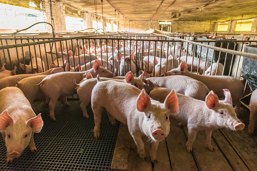

INAKWU'S HOG FARM
I'd rather be the best farmer with healthy hog's than the biggest farmer.

I'd rather be the best farmer with healthy hog's than the biggest farmer.
Inakwu's Hog farm offers well fed and nourished pigs of different maturity levels. Our sole purpose is nurturing a pig from chilhood to maturity for sale.
Fresh air is essential to keep pigs healthy and vigorous. we usually give our hogs a warm, dry, draught-free, straw-bedded housing, as they easily get cold. We also make sure our hogs environments are well ventilated, and we give them enough room to make separate areas for dunging, exploring and sleeping.
We have a dynamic range of foods and ingredients given to our hogs, but all in line to produce a well-balanced diet. Though pigs eat just about anything, we provide our livestock with a good nutrition structure to enhance and encourage the healthiness and growth of our livestock.
Although there is always a hassle with getting properly trained veterinarians, Inakwu's Hog farm have one of the best veterinarians who conduct proper health checkups on our hogs and ensure they are kept healthy, strong and vibrant. Proper vaccinations, parasite control, dental care and household hazards, are also into consideration.